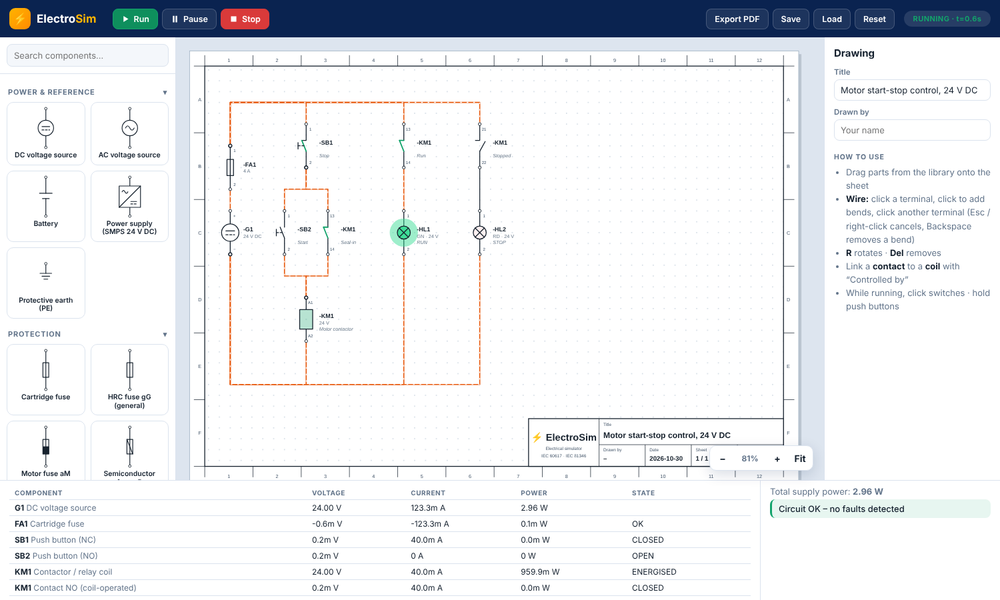

Live control-circuit simulation
- Relay and contactor logic with seal-in latching
- ON-delay and OFF-delay timers
- Fuse blow, breaker trip, short-circuit and overload detection
- Voltage, current and power for every part
Draw real control diagrams with professional symbols, wire them up and press RUN. Watch contactors pull in, lamps light and faults show up — right in your browser.

Build the circuit, run it, break it, fix it. No hardware, no installation.
Every symbol below is the one used in the simulator – drag it onto the sheet and it behaves like the real device.
Symbols, tags and terminal numbers follow IEC 60617 and IEC 81346, so what you draw looks like a real panel schematic.
Hold a start button, trip an overload, blow a fuse. Learn what happens when a circuit is wired wrongly – safely.
Plain HTML, CSS and JavaScript. Open the page, or host it on GitHub Pages – no server, no account.
Drag symbols from the library onto the A4 sheet. Press R to rotate.
Click a terminal, click to add bends, click the next terminal.
Pick a coil in “Controlled by” on each contact so it follows that coil.
Press RUN, click switches, hold push buttons and read the results table.
No. Start with the ready-made start-stop circuit that opens in the simulator, press RUN and change things one at a time.
Symbols follow IEC 60617 in the vertical layout used by EPLAN-style diagrams, with device tags from IEC 81346 (KM, KA, KT, SB, QF, FA, HL…).
A modified nodal analysis solver computes voltages and currents. AC is solved as steady-state RMS and motors act as resistive loads. Three-phase and PLC blocks are not included yet.
Yes. Open the site in Chrome (Android) or Safari (iPhone/iPad) and choose Add to Home screen (Android: menu → Install app; iPhone: Share → Add to Home Screen). It then opens full-screen like an app and works offline.
Yes – Save stores the circuit in your browser, and Export PDF produces the A4 drawing plus a parts list.
Open the simulator and run the start-stop example in seconds.
Open simulator →